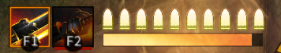
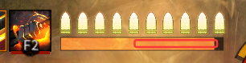
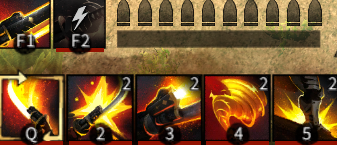
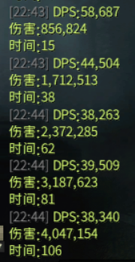
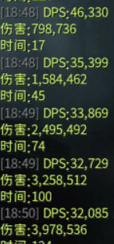
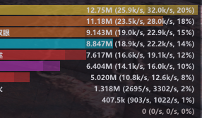

拔刀战士 优化版 5.20更新
心流稳定器，战术装填，伤势愈合，过载弹壳，枪刃5|充能1反色=战术装填，充能1反色=过载弹壳，战术填装黑=心流条=巨龙扳机，充能1反色=战术填装反色=心流条=龙刺地雷，充能满，枪刃2，枪刃3，枪刃4，枪刃2=2=充能1反色=收枪，枪4，剑3|心流稳定器|
心流稳定器,7,50|战术装填,0,600|伤势愈合,6,950|过载弹壳,8,600,,,,,,,,,,,,,,,,,,1,10000,0|枪刃5,5,450|充能1反色|战术填装黑|心流条|巨龙扳机,F2,150,5,1,4,1|龙刺地雷,9,800|充能满,1,600|枪刃2,2,400,,,,,,,,,,b|枪刃3,3,400|枪刃4,4,400|收枪,F1,150|枪4,5,600,4,660|剑3,3,400,,,,,,,,,,b
[&DQIEHwsVRCumAKYA8hryGv0a/RrwGvAa/Br8GgAAAAAAAAAAAAAAAAAAAAADWgA2AAkBAA==]
https://gw2.wishingstarmoye.com/admin/gw2build?url=https://snowcrows.com/builds/raids/warrior/power-bladesworn-faf-sword-pistol

充能5格=第五个子弹
充能满=最后一个子弹
充能1反色=第一个子弹，勾选反色

战术填装反色=心流条=巨龙扳机
心流条，使用范围找色功能，取色右侧的任意黄色，并调节模糊度为50
巨龙扳机取，f2中心
战术填装反色，取左侧任意，勾选反色
原理，当心流条大于50%的时候，才进入能有充足的能量蓄力满

枪刃2=2=充能1反色=收枪
枪刃是拔刀自带的武器组。
不需要进入f1，只需要退出f1，因为f2自动是枪刃模式
枪刃2次，同时不处于拔刀阶段，退出枪刃模式，使用剑枪武器组
剑枪武器组4、5绑定，4可用才会用5，防止人物后退。
枪刃2，以及剑3，勾选了纯黑跳转模式，在切武器时需要，防止没放完就被打断。
进入拔刀状态，自动跟随按键5+4，实现位移
充能满时直接普攻1，简化取色。
本人拔刀基本没玩过，上次火车传了一套，在原基础简化了取色，本文主要对技能的取色位置做一个介绍
自己对技能释放顺序不太清楚，可在以上基础修改，如有更好的可自行上传。

改板之前

改版后，无食物，无灌注，应该是能到35K，也能玩。

菲薄，改板之前
评论列表（39）
战术装填黑怎么取，还有老是心流条快满，F2又是可用的状态，偏偏 要龙刺地雷，这样就不能双拔了
@Lny 战术装填黑就是取CD状态黑色的位置
剑3和枪刃3是哪个技能？
@美美 武器剑，拔刀f1的枪3
为什么我的不自动巨龙扳机
就是不运行F1 F2
大佬 问一个问题 就是我会在枪剑模式下 所有技能冷却后一直平砍 不进入拔刀 要等待右边技能冷却完成才能重新进拔刀呢 大佬
卡住的时候，点击聊天栏，看触发什么按键，这个按键的技能相关的颜色，都重新取色，一般是黑色取色不对导致不循环
刀还没拔出来就按龙刺地雷了 咋回事
不是写了么，不在拔刀状态下才会用地雷，充能1反色，拔刀下才有充能，非拔刀是没有
大佬，确实会出现还没拔出来就龙刺地雷了。逻辑是不在拔刀状态不会有充能，所以充能1取反色，并且拔刀完就没有心流条。但实际充能1取反，心流涨的快，也会取到心流条，就会出现这种情况，麻烦问下是我哪里取错了吗
又重新取了遍色，只有起手第一个拔刀会这样。
又是枪刃 又是枪 又是拔刀 哪个是哪个技能啊T.T
枪刃是进入F1的技能，剑3、枪4是剑枪武器组的技能，拔刀是进入F2的技能。玩过见过拔刀就能看懂了
大佬 这个打桩数据是更新前的还是更新后的？我怎么弄都只能打35K...
很奇怪，又变成只能1.74B才能用了
新版已传，昨天的版本应该只是起手会导致起手后续循环丢失，主循环没有异常。
大佬最新版试了一天发现要是开着宏翻滚，会跟一个翻滚。别的基本运行完美
你的翻滚键是什么
是左SHIFT.我试过把V改掉了还是不行。还是会翻滚
新的2版试试
高低给大佬磕一个，完美，CPU温度也不高了。宏也下常。大佬威武！！！！！
大佬，起手那个是不是应该是手枪5，小火车那边，而不是枪刃5
起手差不多，枪刃5主要是战斗中突进，机场可以换别的
75B6 最新的起手循环没打完，就开始主循环的技能~~
没问题，建议自测
好像只有直伤时空这样，总是再起手循环 释放法池
可以打开日志，查看技能释放顺序，如果你技能没识别到，会自动跳过的，一般是取色问题导致。
主要是同样样的配置，其他版本没问题 不像是取色~ 技能都能识别
已找到问题，明天修
佬 这个我用75B6它进到拔刀会自己用2或3技能。怎么弄都不行。。用74版就好好的,我跟悠悠同学一样
新的应该解决了
好，我打完德拉科去
修复好了，完美
佬 这个我用75B6它进到拔刀会自己用2或3技能。怎么弄都不行。。用74版就好好的
试下刚传的
m佬 之前发的剑矛祭祀现在还能直接用吗
技能没变都能直接用
让我康康